Konsolowa aplikacja pogodowa
Aplikacja służy do planowania i tworzenia kopii zapasowych.
Program napisany jest w C++ z użyciem WinApi.
Intefejs dla użytkownika uruchamia się w niezależnym wątku niż usługa która wykonuje kopie.
Dzięki takiemu rozwiązaniu możemy ustalić harmonogram wykonywania kopii i zamknąć okno,
a mimo tego zaplanowania kopia wykona się w tle.
Zrzuty ekranu
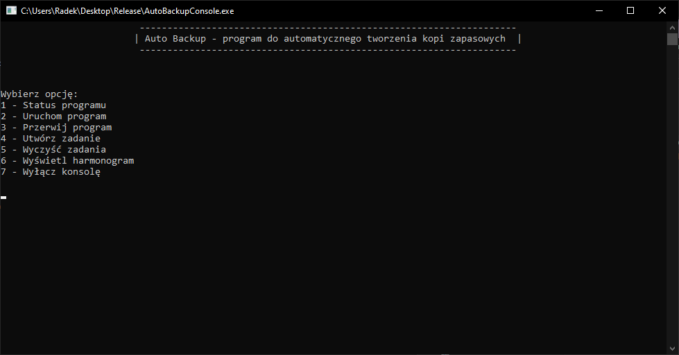
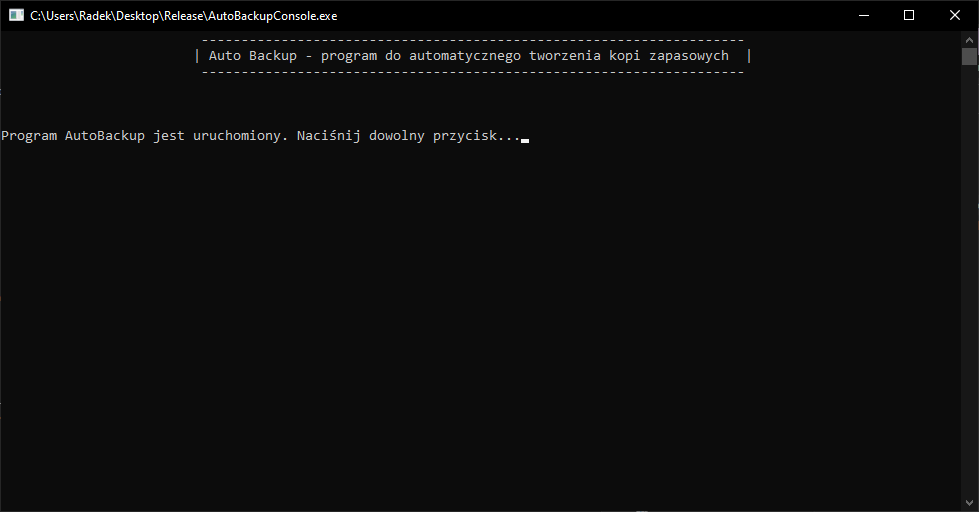
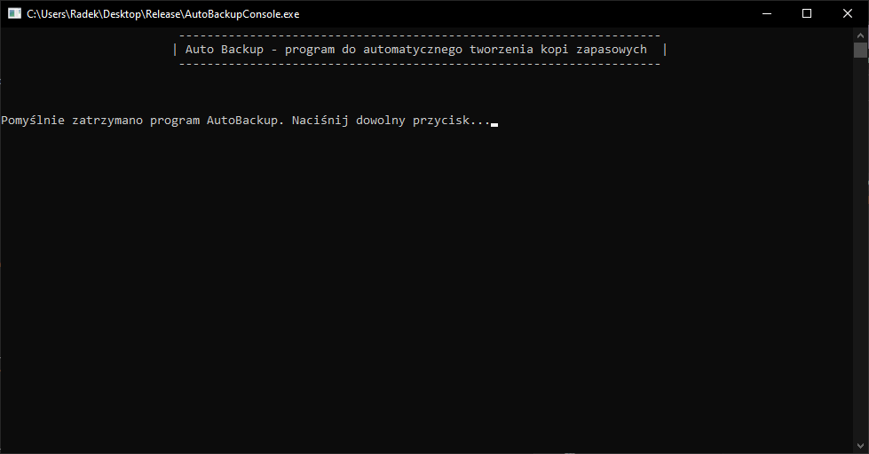
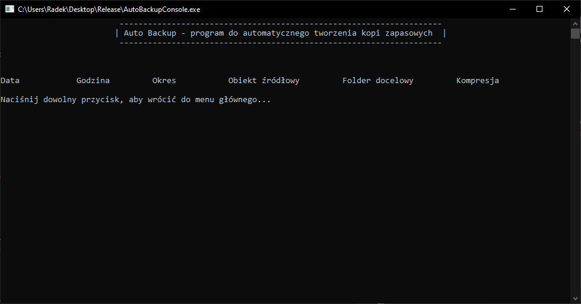
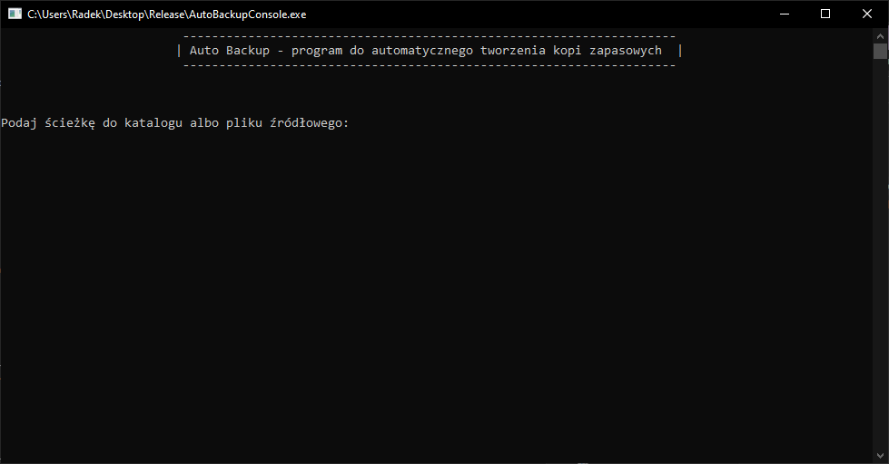
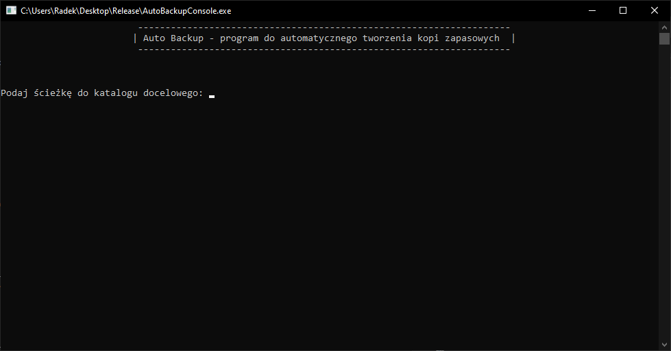
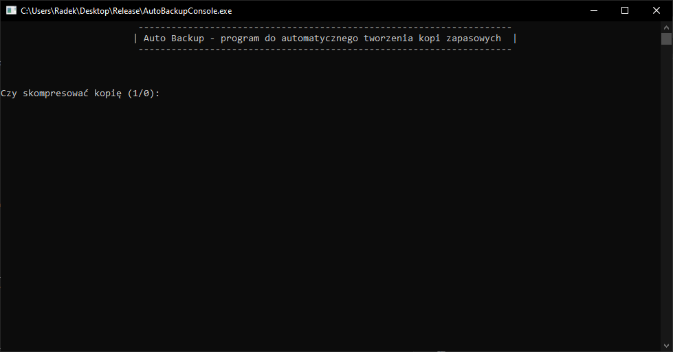
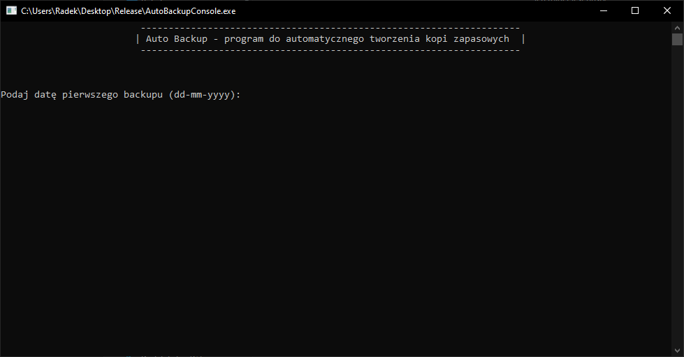
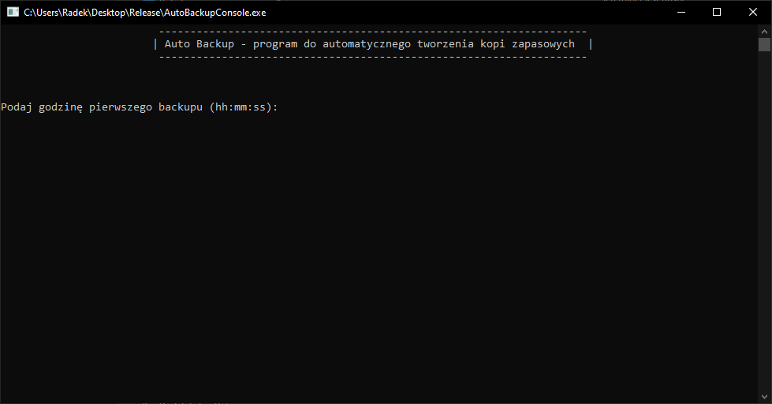
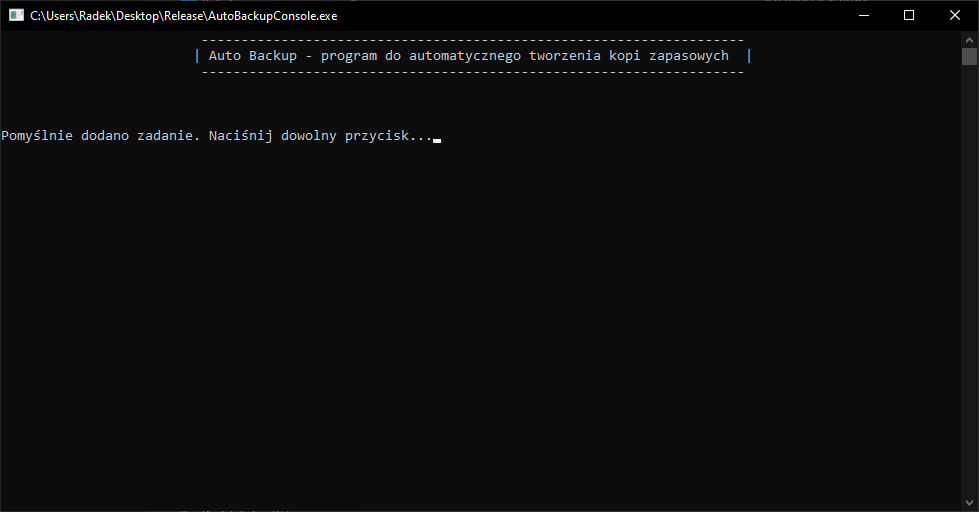
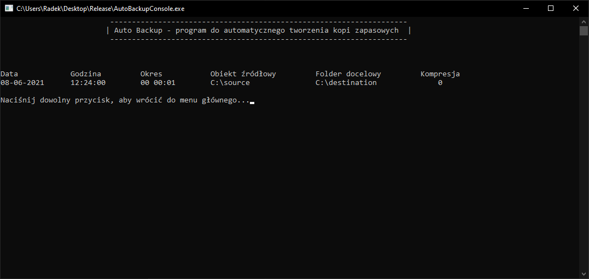